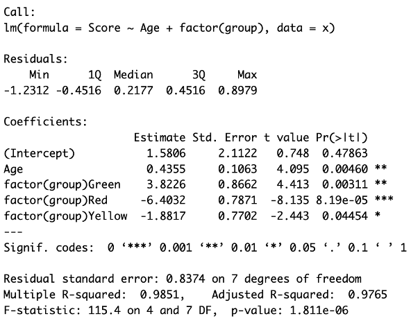
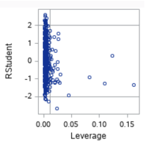
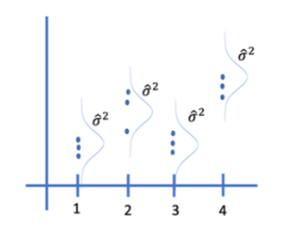
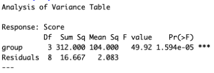
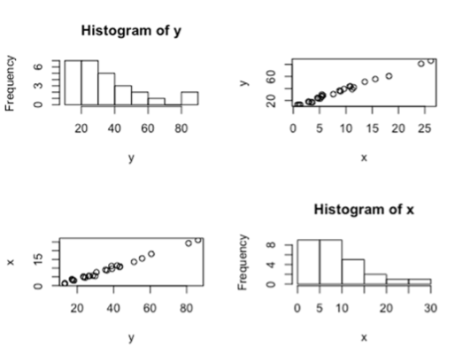
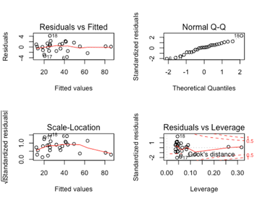

Review Questions
This chapter includes review questions sorted by difficulty. Click on each question to reveal the suggested answer.
Easier
Question 1
Q: Define the terms population and sample. How do they differ?
Click to show answer
Population refers to the entire group of things that you want to study. It includes all members that fit the criteria of the research question. Sample refers to a smaller subset of the population that you collect the data from for the study. It should be representative of the population to ensure the conclusions about the population are valid. They differ in size; the population is larger. Data is collected from the sample because it is impractical or impossible to collect data from entire population. Assuming the sample is randomly selected from the population, conclusions drawn from the sample are generalized to the population as a whole.
Question 2
Q: What is the importance of a representative sample in a study? How do we take one?
Click to show answer
A representative sample is important to be able to make accurate generalizations about your population of interest based on the sample data. It reduced bias and ensures the conclusions are valid. First it is important that you identify what your population of interest is (for example, to predict the results of a vote, a representative sample would be registered voters rather than all voting age adults). Second you must select a sample randomly from that population to ensure that each member of the population has an equal chance of being included. Also, the sample size must be large enough to be representative of the population and capture the population variability.
Question 3
Q: Discuss the differences between mean, median, and mode. In which scenarios might one be more appropriate to use than the others?
Click to show answer
Mean is the average (\(\frac{\text{sum}}{n}\)). The mean of the population is \(\mu\). The mean of the sample is \(\bar{x}\). A mean is not resistant to extreme values. Median is the middle value when the data is ordered from least to greatest (the 50th percentile). If there is an even number of observations, the median is the average of the middle two values. Mode is the value that appears most frequently. A dataset can have more than one mode or no modes if all the values are unique. If a population is normally distributed these values should be nearly the same. Mean is appropriate to use with normally distributed data. If the population has a skewed distribution or extreme values or you can’t verify normality assumptions, it may be more appropriate to draw inferences about the median. With income data, it can often be better to use the median. Mode can be useful to identify the most common values, for instance in categorical values like shoe size.
Question 4
Q: Can you explain what a standard deviation is and what it indicates about a data set?
Click to show answer
Standard deviation is a measure of the variation. The population standard deviation is represented by \(\sigma\), and the sample standard deviation is represented by \(s\). It is calculated by taking the difference between the observed and expected values, squaring them, summing them, and dividing by either the population size or the degrees of freedom. That gives you the variance, and then taking the square root gives you the standard deviation. It indicates the spread of the data and how far data are from the mean.
Question 5
Q: Assume you want to test the mean score on an exam between males and females. If there is strong evidence to suggest the standard deviations of the distributions of the scores for males and females are different, what should we / can we do?
Click to show answer
We can try a transformation of the data, like a log transformation. If the standard deviations equalize, then we can proceed with a two sample t-test, which pools the standard deviations to calculate the t-statistic. This results in higher degrees of freedom and a more powerful test. We could use Welch’s t-test, which assumes normality but not equal standard deviations. It uses each sample’s individual standard deviation to calculate the t-statistic. This adjusts the degrees of freedom down to account for unequal variances. If transformations do not equalize the standard deviation and the distributions are not normal, or we just don’t want to make assumptions about either, we can use a non-parametric test, either a permutation test, which allows for inference on the mean, or a rank sum test for inference on the median.
Question 6
Q: Review the following model and parameter estimate table. Interpret the slope of the Age variable from the following regression model: \[ \text{Score} = \beta_0 + \beta_1\text{Age} + \beta_2 \text{Green} + \beta_3\text{Red} + \beta_4\text{Yellow} \] Follow up: interpret \(\beta_3\):

Click to show answer
There is strong evidence at the \(\alpha = 0.05\) level of significance that regardless of group membership, for every 1 year increase in age, the estimated mean score increases by 0.44 points (\(p\)-value = 0.0046).
Additionally, there is overwhelming evidence at the \(\alpha = 0.05\) level of significance that the estimated mean score of the red group will be 6.40 points lower than the reference group (\(p\)-value < 0.0001), holding age constant. This interpretation applies across all practical ages within the scope of the study. As ages beyond the range of individuals in this sample are extrapolated estimates, they should be evaluated cautiously.
Medium
Question 7
Q: What is a confidence interval, and how does it relate to hypothesis testing?
Click to show answer
A confidence interval is a range of plausible values that is likely to capture the true population mean with a specified probability (the confidence level). For example, if we were to take 100 samples and our confidence level was 95%, we would expect to capture the true population mean within the confidence interval 95 out of the 100 times. It is calculated by estimating the mean from the sample data and adding and subtracting a margin of error (i.e t-multiplier \(\times\) the standard error). In hypothesis testing, we test the assumption that the population mean equals the null hypothesis. If the value in the null hypothesis is within the confidence interval, then we fail to reject, and if it is not, then we reject the null hypothesis.
Question 8
Q: What is a Type I error and a Type II error in the context of hypothesis testing?
Click to show answer
A Type I error is when you reject the null hypothesis when it is true. This is a false positive, where you conclude there is an effect when there is none. The probability of making a Type I error is \(\alpha\) (i.e the significance level of the test). A Type II error is when you fail to reject the null hypothesis when it is false. This is a false negative, where you conclude there is no effect when there really is one. The probability of making a Type II error is \(\beta\). The power of a test, \(1 – \beta\), is the probability of correctly rejecting a false null hypothesis.
Question 9
Q: Can you explain the concept of the \(p\)-value and its significance in hypothesis testing?
Click to show answer
A \(p\)-value is the probability of observing by random chance a result as or more extreme than you observed under the assumption that the null hypothesis is true. The smaller the \(p\)-value the stronger the evidence against the null hypothesis. It allows researchers to determine the significance of their results based on a pre-defined significance level, \(\alpha\). If the \(p\)-value is \(< \alpha\), then we reject the null hypothesis. If the \(p\)-value is \(> \alpha\), it is evidence that there is not a statistically significant result, and we fail to reject. A \(p\)-value determines statistical significance, but not necessarily practical significance. \(\alpha\) allows the researcher to define the significance level required to reject or fail to reject the null hypothesis for each particular problem potentially depending on the risk if you were to draw the wrong conclusion. In other words, if you find that you would expect to see a result as or more extreme than the one you observed in fewer than 1 out of every 100 times or with a \(p\)-value of 0.01. This is convincing evidence that the null hypothesis is false, and you can reject it.
Question 10
Q: What is a box plot, and what information can it tell us about a data set?
Click to show answer
A box plot is a graphical representation of the distribution of a sample based on a five-number summary. It is useful to visualize the central tendency, spread, and sometimes the outliers in the data. It can also be called a box-and-whisker plot. The box represents the interquartile range (IQR) of the data. The outsides of the box tell us the 25th and 75th percentile of the data, and the line through the box tells us the median (i.e the 50th percentile). The whiskers extend sometimes to the min and max of the the dataset, but there are other variations. Commonly the whiskers will extend to \(1.5 \times\) the IQR on both sides and display the data beyond that as points representing the outliers. A box plot give us the five-number summary and potentially tell us about outliers. It shows us the range and skewness of the data as well. If one whisker is longer, it suggests the data are skewed in that direction. If the median line is closer to one quartile, it suggests skewness and a larger spread on the opposite side.
Question 11
Q: What is the Central Limit Theorem, and why is it important in statistics?
Click to show answer
The Central Limit Theorem says that the distribution of sample means will approach a normal distribution regardless of the shape of the population distribution as sample sizes get sufficiently large. It is important because it helps make tests that assume normality, like \(t\)-tests, ANOVA, and linear regression, robust to deviations in normality in the population distribution with sufficient sample size. It is also important when we don’t know the population distribution.
Question 12
Q: What does it mean to have a high Cook’s D? Which point on the scatter plot below has the highest Cook’s D?

Click to show answer
A point with a high Cook’s D has both a high residual value and high leverage, meaning it is an influential point in determining the regression equation. A high residual value results when the observed value is far from the predicted value (the value on the regression line when calculated without that point, or the mean of the distribution of \(y\) for that value of \(x\)). A high leverage value results when the \(x\) value of the point is far from the mean of the \(x\) values. The point on the scatterplot with a high Cook’s D is the point in the lower right box (with a leverage of ~0.02, and a studentized residual of ~-2.75).
Question 13a
Q: We want to test for an effect of a test prep program on student scores on a test. To test for this effect, we randomly select 100 students, give those students a form of the test, and record their scores. At the same time, we randomly select 100 different students from the same population and give them the test prep program. Upon completion of the program, we have the second group of students take the same test as the first group and record their score. What statistical test would you recommend to test for this effect?
Click to show answer
My answer depends on the standard deviations of test scores for each sample. If there is no evidence against equal standard deviation, as the sample sizes of both groups are reasonably large, even if the distributions deviate somewhat from normality, I think a two-sample \(t\)-test would be robust to those deviations and would be an appropriate choice. If there is evidence of unequal standard deviation, and as the sample sizes are equal and are sufficiently sized, a Welch’s two-sample \(t\)-test would be the most appropriate choice. If you were more interested in comparing the medians of the groups, then a non-parametric test, like a rank sum test would be a good choice.
Question 13b
Q: Now we want to test for an effect of a test prep program on student scores on a test. To test for this effect we give the students a form of the test and record their scores. During the next week, we give them the test prep program. Immediately after completing the program, we have them take the test again and record their score again. What statistical test would you recommend to test for this effect?
Click to show answer
As these are paired data, I would choose a test for this situation. Again, the answer depends on the standard deviation. Assuming no evidence against equal standard deviation, I would recommend a paired \(t\)-test. If there was evidence against equal standard deviation or we were interested in comparing median scores, I would choose a signed rank test.
Harder
Question 14
Q: Explain the difference between parametric and non-parametric statistical methods and when you would use one method over another. Provide examples in your explanation.
Click to show answer
Parametric methods have the assumption that the population is normally distributed. Non-parametric tests do not make assumptions about the population distribution. Parametric tests are preferred when the assumption of normality and equal variances are met and the sample size is large enough to apply the CLT. They tend to be more powerful when assumptions are satisfied. If you were comparing two independent normally distributed populations with roughly equal standard deviation, you would prefer a parametric two-sample \(t\)-test, which is a very powerful test. If the groups didn’t have equal standard deviation you could still use a parametric test, but should choose the Welch’s \(t\)-test. Both of these choices assume the sample size is large enough for you to make assumptions about the population or rely on the CLT. If you have very small sample sizes and/or cannot assume the populations are equally distributed, you should use a non-parametric test such as a rank sum test for inferences on the population median or a permutation test. Additionally if you are interested in the medians or have censored data, a rank sum test is a good choice. The same rational goes for paired samples. Choose a paired \(t\)-test if you can assume normality and choose a signed rank test for inference on the median if not. Ditto for comparisons of more than two groups. Choose an ANOVA or Welch’s ANOVA if you can assume normality and choose a Kruskall-Wallis if not. There is also a parametric and non-parametric test for equal variance, the F-test for equal variance and the Brown-Forsythe test that that doesn’t make assumptions about the population normality.
Question 15
Q: Consider the plot and the corresponding ANOVA table below. What number represents the variances of the assumed normal distributions of Y for each group?


Click to show answer
The Mean Sq Residuals (also called the mean squared error) equal \(\sigma^2\), the shared variances, which in this case is 2.083.
Question 16
Q: Explain the concept of statistical power and how sample size may affect it? Follow up: What is \(\alpha\) and \(\beta\) in the context of statistical power?
Click to show answer
Statistical power is the probability that a test will correctly reject the null hypothesis when it is false. It is the likelihood that a test will detect an effect if there is one. It is equivalent to \(1 - \beta\), where \(\beta\) is the probability of a Type II error, of failing to reject when the null hypothesis is false. As sample size increases, \(\sigma_\bar{x}\) (the standard error of the mean) decreases, which narrows the distribution of the sample mean, increasing the likelihood that the sample mean will fall in the rejection region and of detecting an effect. A higher sample size can also lead to higher degrees of freedom. This brings the critical value closer to the null hypothesis, making it easier to reject. It also increases the chance that \(\bar{x}\) is closer to the true population mean, increasing the chance that it is in the rejection zone. \(\alpha\) is the significance level of the test. It represents the probability of making a Type I error or of rejecting the null hypothesis when it is true. Increasing \(\alpha\) increases the likelihood of rejecting the null hypothesis, which increases the ability of detecting an effect. As \(\alpha\) increases, so does power, and as those go up, \(\beta\) goes down.
Question 17
Q: Write a null hypothesis that describes a contrast in which the average of the means of the A and D groups are tested for equality of the C and E groups? What set of contrast weights reflects this contrast (assume they are ordered alphabetically)?
Click to show answer
\(\frac{(\mu_A + \mu_D)}{2} = \frac{(\mu_C + \mu_E)}{2}\)
1 0 -1 1 -1 divisor 2 or .5 0 -.5 .5 -.5
Question 18
Q: Assume we want to test the mean of group A and D for equality. Would it be better to filter the data to get only the As and Ds and then do a two sample \(t\)-test (assuming the assumptions are met) or include all the data including groups B,C and E in the analysis? Why?
Click to show answer
It is better to include all the data and do a linear contrast. That approach gives us higher degrees of freedom. Using the pooled standard deviation with higher degrees of freedom often results in lower standard error. The higher degrees of freedom also brings the critical value closer to the null mean, making it easier to reject or making the test more sensitive. Pooling the standard deviation means the estimate of variability is likely more stable. Both of these factors increase the power of the test, enhancing the likelihood of correctly reject the null hypothesis and detecting a true difference if one exists.
Question 19
Q: An analyst suggested that a SLR model would not be appropriate here because both the response and predictor variables are not normally distributed. Do you agree with the analyst, or do you have something else to say about it?


Click to show answer
I would disagree that SLR is not appropriate. The assumption of normality is not for the distribution of \(x\) or the distribution of \(y\) overall, but for the distribution of \(y\) at each value of \(x\). The scatterplots of \(x\) vs \(y\) and \(y\) vs \(x\) indicate a strong linear trend. The residual plots also support the appropriateness of SLR. The residuals look normally distributed in the QQ plot. The residual scatterplot is randomly scattered around zero with no evidence against equal standard deviation. The standardized residual plot is randomly scattered and within normal values, showing no evidence of high residual points. The Cook’s D plot has a few higher leverage points but no points with high Cooks D to indicate influential outliers.
Additional notes:
Correlation coefficient \(r\) estimates the population correlation, \(\rho\). \(R^2\) = the proportion of the variation in \(y\) that is explained by the linear relationship between \(x\) and \(y\).